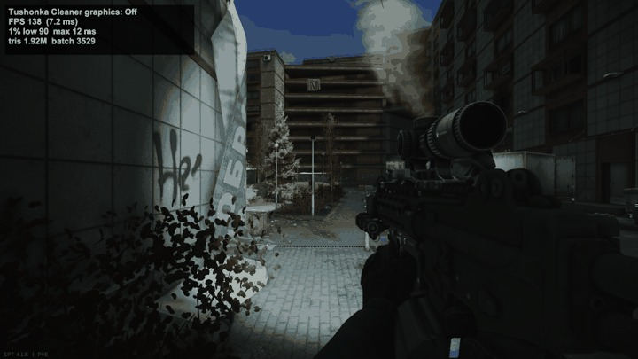

메모리 정리·진단, 서버 최적화, 그래픽 조정을 한곳에서 합니다.Memory cleanup, server optimizations, and graphics adjustments. All in one place.
CactusPie, matsix, EchoStarz의 모드를 바탕으로 한 비공식 통합본입니다. SPT 4.1.6에서 시험했습니다.An unofficial combined build based on mods by CactusPie, matsix, and EchoStarz. Tested on SPT 4.1.6.
설치 전 주의사항을 확인해 주십시오.Read the cautions before installing.
GRAPHICS / IN GAME실제 화면ACTUAL CAPTURE

같은 자리에서 그래픽 단계를 바꾼 실제 화면입니다.Actual gameplay, switching graphics levels from the same spot.
하는 일What it does
필요한 기능을 골라 사용합니다.Choose the tools you need.
세 기능은 따로 켜고 끌 수 있습니다. 첫 실행에서는 권장 설정을 함께 켜거나, 사용할 기능만 직접 고릅니다.Each feature can be turned on or off separately. Start with the recommended settings, or choose what to enable during first-time setup.
MEMORY & VRAM
메모리를 정리하고 살펴봅니다.Clean up. Keep an eye on memory.
평소에는 자동 정리를 사용하고, 문제가 있을 때는 상태 확인·끊김 분석·누수 추적으로 바꿉니다.Use automatic cleanup for everyday play. Switch to monitoring, stutter analysis, or leak tracking when you need to investigate.
어디까지 바꿀지, 직접 비교합니다.See what changes. Choose your trade-off.
기본값은 끔, 권장은 조금 더 가림입니다. 단계를 높이면 화면도 더 달라집니다. 프레임 향상은 그래픽 조정에서 나옵니다.Graphics are off by default. Hide a bit more is recommended. Higher levels change the look of the map more. Frame-rate gains come from the graphics adjustments.
측정 조건Test setupRTX 40802560×1440봇 없음No botsSPT 4.1.6
그래픽 단계별 프레임 시간 · 낮을수록 한 화면을 더 빨리 그립니다.Frame time by graphics level · Lower means each frame takes less time.
그래픽 단계Graphics level
스트리트 (ms)Streets (ms)
등대 (ms)Lighthouse (ms)
화면 변화와 감소율Visual change & frame-time reduction
끔Off
8.4 / 7.8 / 6.8
5.7 / 5.2 / 5.6
원래 화면을 유지합니다.The original view.
간단하게만 가림Light touch
8.4 / 7.9 / 6.9
5.7 / 5.2 / 5.6
먼 장식만 사라집니다. 프레임은 늘지 않습니다.Only distant clutter disappears. FPS does not increase.
조금 더 가림Hide a bit more권장Recommended
7.1 / 6.7 / 6.0
5.1 / 4.6 / 5.3
먼 모델과 그림자가 단순해집니다.Distant models and shadows get simpler.스트리트 12~15% · 등대 5~12% 감소Streets −12–15% · Lighthouse −5–12%
많이 가림Hide more clutter
5.4 / 5.2 / 4.7
5.0 / 4.7 / 5.1
그림자가 꺼져 어두운 곳이 밝아지고, 가까운 벽이 거칠어집니다.Shadows turn off, dark areas get brighter, and nearby walls look rougher.스트리트 31~36% · 등대 9~12% 감소Streets −31–36% · Lighthouse −9–12%
각 칸은 서로 다른 세 지점의 프레임 시간(ms)입니다. 감소율은 끔 대비 프레임 시간의 감소이며, FPS 증가율이 아닙니다. PC와 맵 상태에 따라 결과가 달라집니다.Each cell lists frame times in milliseconds at three different spots. Percentages show a reduction in frame time compared with Off, not an FPS increase. Results vary by PC and map state.
등대에서 잰 세 지점입니다.The three test spots on Lighthouse.
화면을 비교합니다.Compare the view.
거리 · 같은 자리의 네 단계입니다.Street · All four levels from the same spot.사진을 누르면 원본을 봅니다 ↗Click the image for full size ↗옥상 · 같은 자리의 네 단계입니다.Rooftop · All four levels from the same spot.사진을 누르면 원본을 봅니다 ↗Click the image for full size ↗
실내 · 같은 자리의 네 단계입니다.Indoors · All four levels from the same spot.사진을 누르면 원본을 봅니다 ↗Click the image for full size ↗
왼쪽 위TOP LEFT끔Off
오른쪽 위TOP RIGHT간단하게만 가림Light touch
왼쪽 아래BOTTOM LEFT조금 더 가림 · 권장Hide a bit more · Recommended
오른쪽 아래BOTTOM RIGHT많이 가림Hide more clutter
표는 세 지점의 측정 기록이며, 사진은 단계별 화면 차이를 보여 줍니다.The table records measurements from three spots. The images show the visual differences between levels.
MEMORY & VRAM
평소에는 정리하고, 필요할 때 분석합니다.Cleanup for everyday play. Diagnostics when needed.
메모리 모드별 프레임 부담은 측정 오차 ±0.5ms 안이었습니다. 웹의 기본 메모리·프레임·VRAM 수치는 어떤 모드에서도 표시합니다.The frame-time cost of each memory mode stayed within measurement noise: ±0.5 ms. Basic memory, FPS, and VRAM readings remain available on the web in every mode.
자동 정리Automatic cleanup
권장Recommended
평소 게임할 때 사용합니다.For everyday raids.
자동 정리와 메모리 부족 알림을 켭니다. 게임 안 상태 표시와 분석은 끕니다.Runs cleanup and low-memory alerts. The in-game overlay and analysis stay off.
간단 확인Quick check
플레이하며 상태를 살펴봅니다.Keep an eye on things while playing.
정리·알림에 왼쪽 위 상태 표시와 레이드 기록을 더합니다.Adds a top-left overlay and raid reports to cleanup and alerts.
집중 분석Deep analysis
끊김의 원인을 찾습니다.Track down stutters.
모드별 부담과 끊김 원인을 계속 기록합니다. 누수 추적은 끕니다.Continuously records mod overhead and stutter causes. Leak tracking stays off.
누수 추적Leak tracking
레이드 사이에 쌓이는 메모리를 살펴봅니다.Investigate memory that builds up between raids.
몇 분마다 모드별 메모리와 남은 물체를 확인합니다. 끊김 원인 추적은 끕니다.Checks mod memory and lingering objects every few minutes. Stutter tracing stays off.
꺼짐Off
메모리 기능을 사용하지 않습니다.Turn the memory feature off.
메모리·자원 정리, 게임 안 상태 표시, 분석, 알림을 끕니다. 웹의 기본 수치는 계속 표시합니다.Disables cleanup, the in-game overlay, analysis, and alerts. Basic web readings remain available.
집중 분석을 끝내면 측정을 멈춥니다. 분석 준비 작업까지 완전히 없애려면 게임을 다시 켭니다.Leaving Deep analysis stops recording. Restart the game to fully remove its instrumentation.
SERVER
응답 시간과 크기를 함께 봅니다.Response time is only part of the picture.
균형은 일부 최적화를 켜고, 권장은 모든 안전한 최적화를 켭니다. 끔은 원래 서버 동작을 사용합니다.Balanced enables a selection of optimizations. Recommended enables all safe optimizations. Off keeps the original server behavior.
측정 조건Test setup그래픽 측정과 같은 PCSame PC as the graphics test게임 꺼진 상태Game closedSPT 4.1.6
아이템 자료 요청Item data request · /client/items
서버 단계Server level
응답 시간Response time
전송 크기Data size
끔Off
489 ms
3.6 MB
균형Balanced
305 ms
3.7 MB
권장Recommended
265 ms
5.9 MB
권장에서는 응답이 빨라졌지만 전송 크기는 커졌습니다. 모든 항목이 함께 줄어드는 것은 아닙니다.Recommended responded faster, but sent more data. The measurements show a trade-off between response time and data size.
이 표는 서버의 아이템 자료 요청 결과입니다. 레이드 중 FPS 향상을 뜻하지 않으며, PC와 서버 상태에 따라 달라집니다.These results are for a server item-data request. They do not represent in-raid FPS gains. Results vary by PC and server state.
화면 안내The controls
시작은 간단하게, 세부 설정은 웹에서 합니다.Start in game. Fine-tune on the web.
첫 실행 안내, F12, 웹 설정은 같은 모드를 다루는 서로 다른 창입니다. 자주 쓰는 설정은 게임 안에서, 자세한 설정과 기록은 웹에서 확인합니다.First-time setup, F12, and the web settings control the same mod. Keep everyday controls in game and use the web for detailed settings and reports.
게임을 처음 켜면 나오는 설정 창입니다.The setup window that appears on first launch.
SETUP첫 실행First-time setup
권장으로 모두 켜거나 사용할 기능만 고릅니다. 나중에를 누르면 현재 설정을 유지하고 안내를 닫습니다. 이후에는 F12에서 바꿉니다.Enable all recommended settings or choose individual features. Not now keeps your current settings and dismisses the prompt. Use F12 to make changes later.
F12게임 안의 기본 설정Everyday controls in game
언어, 메모리 모드, 서버 단계, 그래픽 단계, 웹 열기, 단축키를 설정합니다. 자세한 설정이 필요하면 웹 설정 열기를 누릅니다.Set the language, memory mode, server level, graphics level, and shortcut. Open web settings from here for the details.
WEB세부 설정과 기록Details and reports
설정, 실시간 분석, 레이드 보고서, 지난 기록을 봅니다. 게임 실행 중 첫 실행 창이나 F12의 버튼으로 엽니다.Browse settings, live analysis, raid reports, and past records. Open it from the setup window or F12 while the game is running.
http://127.0.0.1:6977/
웹 설정 화면입니다.The web settings.
메모리 및 VRAMMemory & VRAM서버Server그래픽Graphics
사진을 누르면 크게 봅니다.Click an image to see it larger.
설치와 이동Installation & migration
압축을 풀고, 옛 모드 이동을 확인합니다.Extract the files. Check the migration.
SPT 4.1용입니다. 배포 압축 파일에는 게임 쪽 플러그인과 서버 모드가 함께 들어 있습니다.For SPT 4.1. The release archive includes both the game plugin and the server mod.
릴리즈 압축 파일을 받습니다.Download the release archive.
GitHub Releases에서 Tushonka Cleaner의 배포용 ZIP을 받습니다.Get the Tushonka Cleaner release ZIP from GitHub Releases.
압축 안의 폴더 구조를 유지해 SPT 폴더에 덮어씁니다. BepInEx와 SPT_Runtime 폴더가 각각 들어갑니다.Keep the archive’s folder structure and merge it into your SPT folder. It contains the BepInEx and SPT_Runtime folders.
옛 모드 이동 안내를 확인합니다.Check for the old-mod migration notice.
서버를 켠 뒤 옛 모드를 옮겼다는 안내가 나오면 서버를 한 번 더 켭니다. 옮긴 첫 실행에는 겹치는 기능이 멈춥니다.If the server says it moved old mods, restart the server once. Overlapping features stay disabled on that first run.
사용 전 확인Before you play
설치 전에 알아 둘 점입니다.What to know before you install.
그래픽과 메모리 측정값은 RTX 4080 PC 한 대에서 봇 없이 얻었습니다. 다른 PC나 봇이 있는 레이드에서 같은 결과를 약속하지 않습니다.Graphics and memory results came from one RTX 4080 PC without bots. They are not a promise of the same results on another PC or in raids with bots.
알려진 주의사항Known cautions
Smoothie와 함께 쓰지 마십시오. 함께 설치되어 있으면 서버 콘솔과 메뉴에 경고합니다. Smoothie 파일은 건드리지 않습니다.Do not use with Smoothie. If both are installed, a warning appears in the server console and menu. Smoothie files are left untouched.
많이 가림은 그림자를 끄고 가까운 벽도 거칠게 만듭니다. 적용 전 비교 사진을 확인해 주십시오.Hide more clutter disables shadows and makes nearby walls look rougher. Check the comparison images before using it.
낙서·얼룩을 숨기는 설정 변경은 다음 레이드부터 적용됩니다.Changes to hiding graffiti and stains take effect from the next raid.
동작 확인How it behaves
RAM이 부족할 때 도는 정리는 이전 버전의 실제 게임 로그에서 동작을 확인했습니다. 윈도우 전체의 여유 RAM이 10% 밑으로 내려가면 돕니다. 기준은 설정에서 바꿀 수 있습니다.Low-RAM cleanup was confirmed in a real game log from an earlier version. It runs when free system RAM drops below 10%. You can change the threshold in the settings.
모드 언어는 게임이 한국어면 한국어로, 그 밖의 언어면 영어로 자동 표시합니다. F12에서 직접 고를 수도 있습니다.The mod’s language follows the game: Korean for a Korean game, English for anything else. You can also pick it yourself in F12.
출처와 라이선스Credits & license
원작자의 작업을 기반으로 합니다.Built on the work of the original authors.
이 모드는 아래 원작자들의 작업을 모은 비공식 통합본입니다. 배포물에는 GPL-3.0이 적용되며, 각 원본의 저작권과 라이선스는 유지합니다.This is an unofficial combined build of the original authors’ work below. The distribution is licensed under GPL-3.0. Original copyrights and licenses are preserved.
그래픽 기능은 다른 모드의 코드나 이름 목록 없이 새로 작성했습니다. 작은 장식을 가린다는 착상은 Tyrian(Xenoxia8953)의 Tyrian-DeClutterer에서 얻었습니다.The graphics feature was written from scratch without other mods’ code or name lists. The idea of hiding small decorations came from Tyrian (Xenoxia8953) and Tyrian-DeClutterer.
CactusPie GPL-3.0
SPT-RamCleanerInterval 메모리 정리·보고·진단 기능의 기반입니다.The basis for memory cleanup, reports, and diagnostics.
CompoundingPerf 서버 최적화·설정·진단, 숨겨진 메뉴 영상 일시정지와 착지한 에어드랍 물리 정리의 기반입니다.The basis for server optimizations, settings, diagnostics, pausing hidden menu videos, and cleaning up landed airdrop physics.